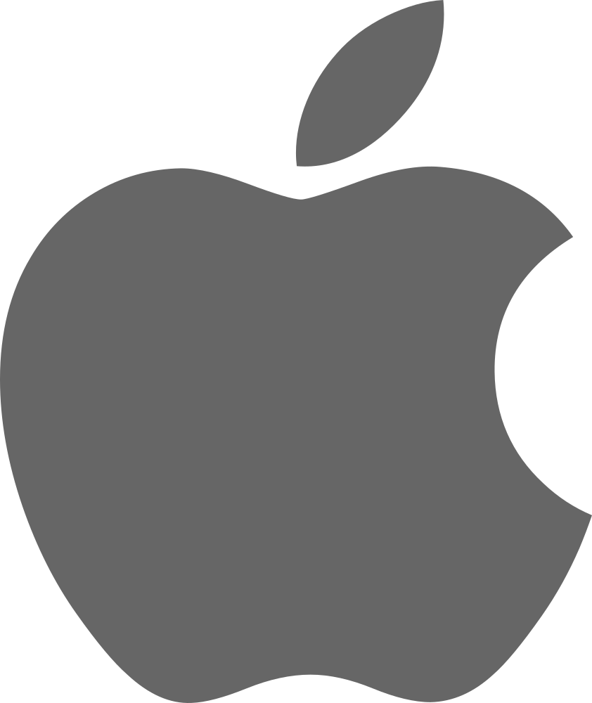

애플 Apple
애플에게 혁신은 일회성 전략이 아니라 조직의 습관처럼 반복되는 브랜드 행동이다. 애플은 새로움을 캠페인으로만 말하지 않는다. 제품, 인터페이스, 매장, 발표 방식까지 같은 태도로 정렬해 변화 자체를 브랜드의 일상적 리듬으로 만든다. Kantar BrandZ 2026 Top 100에서 Apple는 2위, 브랜드 가치는 US$1,380,294M, 전년 대비 변화율은 6%로 공표되었습니다.
최종 업데이트
애플은 어떤 브랜드인가
애플에게 혁신은 일회성 전략이 아니라 조직의 습관처럼 반복되는 브랜드 행동이다. 애플은 새로움을 캠페인으로만 말하지 않는다.
제품, 인터페이스, 매장, 발표 방식까지 같은 태도로 정렬해 변화 자체를 브랜드의 일상적 리듬으로 만든다. Kantar BrandZ 2026 Top 100에서 Apple는 2위, 브랜드 가치는 US$1,380,294M, 전년 대비 변화율은 6%로 공표되었습니다.
애플은 어떻게 봐야 할까
애플에게 혁신은 일회성 전략이 아니라 조직의 습관처럼 반복되는 브랜드 행동이다. 애플은 새로움을 캠페인으로만 말하지 않는다.
제품, 인터페이스, 매장, 발표 방식까지 같은 태도로 정렬해 변화 자체를 브랜드의 일상적 리듬으로 만든다. 애플은 기기를 판매하지만, 실제로는 사용자가 기술을 대하는 방식을 바꾼다.
제품의 기능보다 중요한 것은 사용자가 기기를 자연스럽게 이해하고, 연결하고, 자신의 생활 방식 안에 편입시키는 경험이다. 애플의 마케팅은 제품 설명보다 자기다움을 통해 차이를 만드는 브랜딩에 가깝다.
애플은 사양 경쟁에 머물지 않고, 단순함과 통합성, 사용자의 감각을 통해 왜 다른 브랜드인지 설명한다.
애플은 어떻게 시작되고 성장했나
애플은 1976년 스티브 잡스와 스티브 워즈니악이 세운 IT 브랜드로, 사용자 중심의 기술과 세련된 디자인으로 큰 인기를 얻으며 성장했다. 컴퓨터부터 노트북, MP3, 스마트폰으로 이어지는 IT 업계의 흐름을 선도한 애플은 가장 높은 브랜드 가치를 지닌 기업 중 하나로 자리매김했다.
애플의 브랜드 아이덴티티는 무엇인가
애플의 시각 아이덴티티는 단순화의 역사로 읽힌다. 1976년 로널드 웨인이 그린 첫 로고는 사과나무 아래 앉은 아이작 뉴턴을 펜화풍으로 묘사한 복잡한 도안이었으나, 1977년 롭 자노프가 한 입 베어 문 사과에 위에서 초록·노랑·주황·빨강·보라로 이어지는 여섯 색 가로 줄무늬를 입힌 무지개 로고로 교체된다.
베어 문 자국은 사과를 토마토나 체리와 혼동하지 않도록 형태를 명확히 하려는 의도였고, 색채 띠는 컬러 화면을 구현한 애플 II를 부각하려는 선택으로 전한다. 1998년 스티브 잡스 복귀 무렵 무지개를 버리고 단색 실루엣으로 전환했으며, 초기 아이맥 시기의 광택 나는 유리질 표현을 거쳐 현재의 납작한 모노크롬 실루엣으로 굳어졌다.
색은 흑·백·은회색을 기본 운용으로 삼아 배경과 소재에 따라 단색으로 적용한다. 서체는 오랫동안 마이리어드(Myriad) 계열을 변형한 마이리어드 셋을 기업 서체로 썼고, 2014년 이후 자체 개발한 산프란시스코(San Francisco)를 운영체제와 마케팅 전반의 기본 글자체로 채택했다.
군더더기를 덜어내 형태와 여백으로 말하게 하는 미니멀리즘이 이 모든 변화를 관통하는 원칙으로 작동한다.
애플의 대표 제품과 서비스는 무엇인가
애플은 본질만을 남겨두는 단순한 디자인을 추구한다. 이러한 디자인 철학을 반영한 제품들은 아름다운 외관뿐만 아니라 혁신적이면서 간결한 기능을 가진다.
애플의 통찰력을 통해 탄생한 다양한 서비스가 더해져, 더 이상 뺄 것이 없는 단순하면서도 완전한 제품을 제공하고 있다. 애플 TV, 애플 워치, 아이패드, Q9479, 아이맥, 컴퓨터 하드웨어, 네트워킹 하드웨어, 에어팟
애플 연혁 — 주요 사건은 언제였나
애플 로고는 어떻게 변해왔나
 BI/CI 아카이브대표 브랜드 마크
BI/CI 아카이브대표 브랜드 마크 BI/CI 아카이브 1보관 이미지 1
BI/CI 아카이브 1보관 이미지 1
BI/CI 아카이브 2보관 이미지 2 BI/CI 아카이브 3보관 이미지 3
BI/CI 아카이브 3보관 이미지 3자주 묻는 질문
애플는 어떤 산업의 브랜드인가요?
애플는 기술·전자 분야의 브랜드입니다.
애플의 브랜드 아이덴티티는 무엇인가요?
애플의 시각 아이덴티티는 단순화의 역사로 읽힌다.
애플의 대표 제품은 무엇인가요?
애플은 본질만을 남겨두는 단순한 디자인을 추구한다.
애플는 어느 기업이 소유하고 있나요?
공식 웹사이트: https://apple.com/hu/; 국가: 미국; 본사: 쿠퍼티노; 소유자: 뱅가드 그룹; 산업: 소프트웨어 산업
출처와 검증
브랜드명은 한글과 원어를 함께 표기하되 데이터에 없는 표기는 만들지 않습니다. 기원 국가·설립연도는 검수된 정의문에서 확인된 값을 우선하고, 없을 때만 공식 웹사이트 URL이 일치하는 위키데이터 개체의 값을 씁니다.